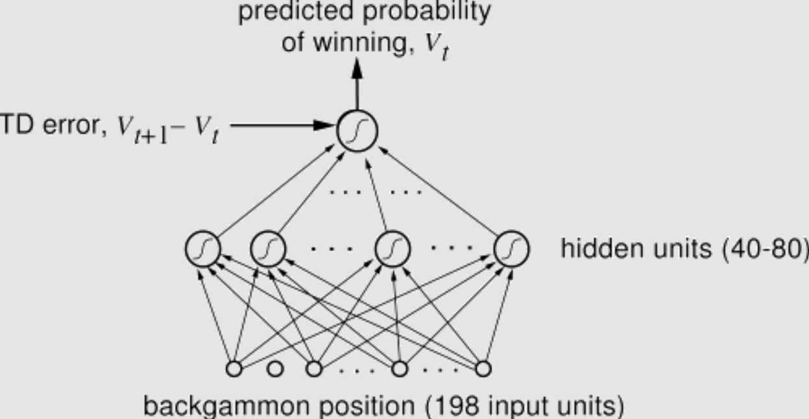

Advanced machine learning
From AlphaGo to AlphaZero
Alex Avdiushenko
March 26, 2024
RL recap


Source: BartoSutton.pdf
Policy gradient
We are trying to train just policy
$$\pi(a|s, \theta) = Pr[a_t = a| s_t = s]$$- We can train stochastic policies, where $\pi(a|s) \neq 0,1$
- We even can train raw scores only, applying Softmax for moves probabilities
Policy gradient theorem
Probabilities $Pr_\pi[s]$ are very hard to calculate, but we can just play using policy $\pi$, and this gives us correct samples from this distribution.
The REINFORCE algorithm is a policy-based method used in reinforcement learning. Unlike value-based methods, which aim to learn a value function by interaction with the environment, REINFORCE learns a stochastic policy directly.
$${\nabla_\theta J(\theta) \propto \sum\limits_s Pr_\pi[s] \sum\limits_a Q_\pi(s,a) \nabla_\theta \pi(a|s)} = \\ \quad = \mathbb{E}_{\pi} \left[ \sum\limits_a Q_\pi(S_t,a) \nabla_\theta \pi(a|S_t, \theta)\right]$$So the SGD updates are
$$\theta_{t+1} = \theta_{t} + \alpha \sum\limits_a \hat Q_\pi(S_t,a,\theta) \nabla_\theta \pi(a|S_t, \theta),$$where $\hat Q_\pi(S_t,a,\theta)$ is some learned approximation of the action-value function $Q$.
TD-Gammon (1992)
TD-Gammon is a computer backgammon program that uses artificial intelligence and machine learning techniques to play the game at a highly competitive level. Developed by Gerald Tesauro from IBM.

Game Go: Basic Rules

History of Programs Playing Go
1960-s: Beginnings
- The first attempts to program a computer to play Go began in the 1960s.
- The earliest Go programs could only play on smaller 9x9 or 13x13 boards and demonstrated limited capabilities due to the complexity of the game and technological constraints. 1968: Albert Zobrist.
1980-1990-s: Incremental Improvements
- Throughout the 80s and 90s, Go programs gradually improved with advancements in computing power and AI algorithms.
- However, they were still far from matching the skills of human players. Goliath, Go Intellect, Handtalk, Goemate.
The power of computer Go programs
- 1997: Janice Kim (1p) won HandTalk program with a 25-stone handicap
- In the same year HandTalk program won 11-13 year old amateur 2-6 dans with 11-stone handicap
- 2001: Many Faces program won Insei (1p) on a 25-stone handicap
- At the 2010 European Go Congress MogoTW played 19x19 Go against Catalin Taranu (5p). MogoTW received a 7-stone handicap and won
- We know that DeepBlue defeated Garry Kasparov in 1997
- What is the problem? Why is Go harder than Chess for computer?
Schematic tree of possible moves in Go

Why is Go really hard for computer?
- Huge branching factor
- Chess: there are 30–40 possibilities, and lots of them are obviously weak
- Go: there are about 250 possibilities, and about 100 from them are "reasonable"
- Hard to evaluate current position
- Chess: one can count pieces material and there are simple heuristics
- Go: it is really challenging even to understand who wins in the final position
2000-s: Monto-Carlo Tree Search
- In the 2000s, Monte Carlo Tree Search (MCTS) algorithms were introduced, resulting in significant improvements in the performance of Go programs
- We launch random simulations from the current position, observe which branches yield more wins, and then repeat the process

Monte Carlo Tree Search — UCB1
The main part of MCTS is the formula for selection of the next node. The UCB1 formula looks like this (the same as in multi-armed bandits):
$$ UCB1 = \frac{w_i}{n_i} + c \sqrt{\frac{\ln t}{n_i}} $$where:
- $w_i$ is the number of wins
- $n_i$ is the count of simulations for the node associated with action $i$
- $c$ is the parameter, by default $c=\sqrt{2}$
- $t = \sum\limits_i n_i$ is the total count of simulations for the parent node
The algorithm prefers actions with higher estimated rewards and higher uncertainties.
AlphaGo vs. Lee Sedol
9-15 March 2016Forecast was 1 : 4
Result was 4 : 1
History of AlphaGo
- AlphaGo is a computer program developed by Google DeepMind in 2014-2015: David Silver, Aja Huang etc.
- October 2015: AlphaGo plays its first match against the reigning three-time European Go champion, Fan Hui (2p), and wins 5:0. This is the first time a computer Go program has beaten a human professional player without handicaps on a full-sized 19x19 board.
- Paper in Nature "Mastering the game of Go with deep neural networks and tree search"
- March 2016: AlphaGo plays a five-game match against Lee Sedol, one of the world's top Go players, and wins 4:1.
- May 2017: AlphaGo plays a three-game match against Ke Jie, the world No.1 ranked player at the time, and wins 3:0.
The development of AlphaGo was a significant achievement in the field of Artificial Intelligence.
What is inside AlphaGo?
-
Supervised learning (SL) policy network for next move prediction:
- 13-layers CNN for features extraction from the board
- 30 billion positions from human expert games
- Moves probability distribution as output: $p_\sigma(a \mid s)$
- Accuracy reaches 57%, which is very high
- Also train fast and worse strategy $p_\pi$ (accuracy is 24%, but inference time is much less: 3 millisecond $\to$ 2 nanosecond)
- SL policy network predicts the next move
- RL policy network improves SL using reinforcement learning:
- the same structure of 13-layers CNN
- initialize with SL policy network
- self plays with one of the previous iterations of RL policy
- new weights maximize the probability of winning
- RL policy wins 80% games versus SL and 85% versus Pachi (one of the best MCTS programs)
- and this is without any MCTS-counting, due to only the strong moves' prediction!
- SL policy network predicts the next move
- RL policy network improves SL using reinforcement learning
- Also, they train function $V_\theta(s)$ for state evaluation:
- the same structure of 13-layers CNN, but now output is the probability of winning
- cannot train on the human expert's games only because of overfitting
- so they used self-play games from the RL policy network
- as a result, they got a great tool for position evaluation, which is 15K times faster than MCTS + RL
- SL policy network predicts the next move
- RL policy network improves SL using reinforcement learning
- Function $V_\theta(s)$ for state evaluation
- Eventually we can use MCTS counting:
- build an MCTS-like tree
- apriori probabilities initialize as $p_\sigma(a \mid s)$ from SL policy
- in each node of a tree for state evaluation we use $V_\theta(s)$, combined with the random rollout of self-played fast strategy $p_\pi$
- it is interesting that SL policy works better for tree building, but for training function $V_\theta(s)$ is better use stronger RL policy
AlphaZero
AlphaZero is a more generalized and simple variant of the AlphaGo algorithm, and is capable of playing Chess, Shogi and Go.
- AlphaZero is a reinforcement learning system, it learns to play by playing games against itself and improving from its mistakes only
- Silver et al., 2017: "Mastering Chess and Shogi by Self-Play with a General Reinforcement Learning Algorithm"
- AlphaZero also outperformed Stockfish, one of the top-ranked chess engines, winning 28 games and drawing the rest in a 100-game match

Inside AlphaZero
- we have a deep neural network for next move prediction and position evaluation
- it self-plays and simultaneously builds an MCTS tree
- it improves both the NN weights (via RL) and MCTS tree

We minimize
$$ Loss = (z-v)^2 - \pi^T \cdot \log p + c \|\theta\|^2 $$where $p$ is vector with moves probabilities from NN, $\pi$ — improved by MCTS vector of probabilities, $z \in \mathbb{R}$ and $v \in \mathbb{R}$ are value function estimations from MCTS and NN, $\theta$ are weights of NN, and $c$ is regularization coefficient.
Summary
- We started with policy gradient descent (the central method in robotics)
- We got acquainted with the AlphaGo and AlphaZero models
- Reinforcement learning allows you to pass a gradient through a sequence of discrete steps with a reward at the end
- Best used in tasks where there is a discrete sequence of actions and states